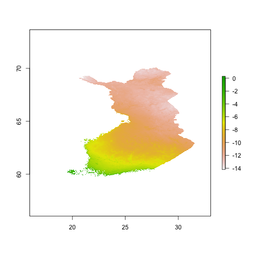

This R package (fmi) provides a client to access the Finnish Meteorological Institute (Ilmatieteenlaitos) open data. This R package is a part of the rOpenGov project.
The fmi package depends on the GDAL library and its command line tools. Please, see the installation instructions in the gisfin package tutorial to install GDAL. If you have GDAL already installed, you might need to update it to newer version. Also, add the command line tools to the search path of your system as follows:
In Linux, the tools should be found from the path by default after installation.
If not, use the export command from terminal, for example:
export PATH=$PATH:/usr/local/gdal/bin
From terminal, type:
export PATH=$PATH:/Library/Frameworks/GDAL.framework/Programs
Open System from Control Panel and select “Advanced System Settings”.
Click “Environment Variables” and select “Path” Variable from the list.
Append ;C:\Program Files (x86)\GDAL to the value field (note the semicolon).
Note that the actual location of GDAL may vary depending on your system. To test that the tools are found from the path, type the command in terminal (Command Prompt in Windows):
ogr2ogr
To test that you also have a recent version of GDAL:
ogr2ogr --help
You should see the options -splitlistfields and -explodecollections in the printed help.
If not, you need to update GDAL.
Start R and follow these steps to install the required packages:
install.packages(c("devtools", "sp", "rgdal", "raster"))
library(devtools)
install_github("rOpenGov/rwfs")
Note that rgdal version 0.9-1 or newer is needed. Then install the fmi package itself:
install_github("rOpenGov/fmi")
In order to use the FMI API, you need to obtain a personal API key first. To get the key, follow the instructions at https://ilmatieteenlaitos.fi/rekisteroityminen-avoimen-datan-kayttajaksi (appears to be available only in Finnish). Enter the API key from command line:
apiKey <- "ENTER YOUR API KEY HERE"
FMI provides a brief introduction to the data sets at http://en.ilmatieteenlaitos.fi/open-data-sets-available.
A complete list of the available data sets and filtering parameters are described in
http://en.ilmatieteenlaitos.fi/open-data-manual-fmi-wfs-services.
Each data set is referenced with a stored query id, for example the id for the daily weather time series
is fmi::observations::weather::daily::timevaluepair. This data set contains variables for
daily precipitation rate, mean temperature, snow depth, and minimum and maximum temperature,
see the description of fmi::observations::weather::daily::multipointcoverage.
The data can be filtered with a number of parameters specific to each data set.
For example, the starting and the ending dates are provided by the starttime and endtime
parameters for the weather observations.
Queries to the FMI API are specified using an object of the class FMIWFSRequest. To initialize the object, type:
library(fmi)
request <- FMIWFSRequest$new(apiKey=apiKey)
The fmi package provides two types of queries: a manual one for direct access to the FMI API and an automated one for a convenient access obtaining the data sets.
In the manual case, stored query id and filter parameters are given with the setParameters method:
request$setParameters(request="getFeature",
storedquery_id="fmi::observations::weather::daily::timevaluepair",
starttime="2014-01-01T00:00:00Z",
endtime="2014-01-01T00:00:00Z",
bbox="19.09,59.3,31.59,70.13",
parameters="rrday,snow,tday,tmin,tmax")
The parameter request="getFeature" must be specified always.
For the automated case, see below.
Queries to the FMI API are made by using the FMIWFSClient class object. For example, a manual request is dispatched with
(continued from the previous example):
client <- FMIWFSClient$new(request=request)
layers <- client$listLayers()
response <- client$getLayer(layer=layers[1], parameters=list(splitListFields=TRUE))
This example retrieves a list of data layers and the first layer is used to obtain the actual data. In fact, there is only single layer.
For the same stored query, an automated request method, getDailyWeather, exists as well, which is a more
convenient way to retrieve the data. For example, to get all weather observations for the 1st of January in 2014:
request <- FMIWFSRequest$new(apiKey=apiKey)
client <- FMIWFSClient$new(request=request)
response <- client$getDailyWeather(startDateTime="2014-01-01", endDateTime="2014-01-01", bbox=getFinlandBBox())
Here the function getFinlandBBox returns the bounding box surrounding the whole Finland.
See the package documentation in R for all available automated queries. Currently, the package supports only
a few data sets, which can be obtained using an automated query method. The rest of the stored queries are
available with the generic method getLayer.
As rgdal does not currently support direct queries to the FMI API in most cases, the client saves the response
to an intermedidate file first and then lets GDAL and rgdal to parse it. The FMIWFSClient class provides
a caching mechanism, so that the response is needed to be downloaded only once for the same subsequent queries.
The response file can be saved to a permanent location with the method saveGMLFile and loaded up into a
FMIWFSClient object again with the loadGMLFile method.
The fmi package supports time-value-pair and GRIB data formats. Multipoint-coverage format is not currently supported. However, most of the multipoint-coverage data sets are availables in the time-value-pair format as well.
The automated queries attempt to associate appropriate metadata with the obtained data. The generic method getLayer
ignores the metadata and therefore it is left to the user to handle the metadata.
In case there is no documentation available, the metadata - or some of it - can be found from the actual XML
response retrieved from the FMI API. The XML response can be browsed by entering the query URL to a browser
or saving the response to a file first and then viewing it. A query URL can be printed from the request object
directly:
request
For manual requests, coordinate reference system (if needed) must be specified manually by providing the crs argument
as a character string for the getLayer method. The default CRS appears to be WGS84. Furthermore, longitude and latitude
coordinates may need to be swapped, which can be done with the argument swapAxisOrder=TRUE. For example:
response <- client$getLayer(layer="PointTimeSeriesObservation", crs="+proj=longlat +datum=WGS84", swapAxisOrder=TRUE, parameters=list(splitListFields=TRUE))
The last parameter splitListFields=TRUE asks the ogr2ogr tool bundled with the GDAL library
to convert the list fields to separate fields, so that rgdal can read the data properly.
Some of the responses contain a redundant multipoint feature, which rgdal does not handle.
A workaround is to remove the feature using ogr2ogr.
In such case, explodeCollections=TRUE needs to be specified for the getLayer method, for example:
response <- client$getLayer(layer="PointTimeSeriesObservation", parameters=list(explodeCollections=TRUE))
Unprocessed data can be saved to a file with the saveGMLFile method and later processed by referencing
the file using a GMLFile object:
request <- FMIWFSRequest$new(apiKey=apiKey)
client <- FMIWFSClient$new(request=request)
response <- client$getDailyWeather(startDateTime="2014-01-01", endDateTime="2014-01-02", bbox=getFinlandBBox())
tempFile <- tempfile()
client$saveGMLFile(destFile=tempFile)
request <- rwfs::GMLFile$new(tempFile)
client <- FMIWFSClient$new(request=request)
response <- client$getDailyWeather()
TODO
Load the library:
library(fmi)
Enter your API key for the examples:
apiKey <- "ENTER YOUR API KEY HERE"
Construct a request object for the manual query:
request <- FMIWFSRequest$new(apiKey=apiKey)
request$setParameters(request="getFeature",
storedquery_id="fmi::observations::weather::daily::timevaluepair",
starttime="2014-01-01",
endtime="2014-01-02",
bbox="19.09,59.3,31.59,70.13",
parameters="rrday,snow,tday,tmin,tmax")
The time parameters can be provided as objects that can be converted to the POSIXlt objects and
bbox as an extent object from the raster
package as well.
Set up a client object and list the layers in the response:
client <- FMIWFSClient$new(request=request)
layers <- client$listLayers()
layers
## [1] "PointTimeSeriesObservation" "Location"
## attr(,"driver")
## [1] "GML"
## attr(,"nlayers")
## [1] 2
Parse the data from the response, which has been cached:
response <- client$getLayer(layer=layers[1], crs="+proj=longlat +datum=WGS84", swapAxisOrder=TRUE, parameters=list(splitListFields=TRUE))
library(sp)
head(cbind(coordinates(response), response@data[,c("name1","time1","result_MeasurementTimeseries_point_MeasurementTVP_value1","time2","result_MeasurementTimeseries_point_MeasurementTVP_value2")]))
## coords.x2 coords.x1 name1 time1
## 1 19.90 60.12 Jomala Maarianhamina lentoasema 2014-01-01T00:00:00Z
## 2 19.90 60.12 Jomala Maarianhamina lentoasema 2014-01-01T00:00:00Z
## 3 19.90 60.12 Jomala Maarianhamina lentoasema 2014-01-01T00:00:00Z
## 4 19.90 60.12 Jomala Maarianhamina lentoasema 2014-01-01T00:00:00Z
## 5 19.90 60.12 Jomala Maarianhamina lentoasema 2014-01-01T00:00:00Z
## 6 21.37 59.78 Parainen Utö 2014-01-01T00:00:00Z
## result_MeasurementTimeseries_point_MeasurementTVP_value1
## 1 NaN
## 2 NaN
## 3 3.6
## 4 2.8
## 5 4.5
## 6 0.3
## time2
## 1 2014-01-02T00:00:00Z
## 2 2014-01-02T00:00:00Z
## 3 2014-01-02T00:00:00Z
## 4 2014-01-02T00:00:00Z
## 5 2014-01-02T00:00:00Z
## 6 2014-01-02T00:00:00Z
## result_MeasurementTimeseries_point_MeasurementTVP_value2
## 1 NaN
## 2 NaN
## 3 3.8
## 4 3.3
## 5 4.3
## 6 -1.0
The data is returned as a SpatialPointsDataFrame object in “wide” format so that there is a row for each
variable and observation location, but for each day (two days here) there are columns for time and observation
indexed with a sequential number. The columns starting with time contains the time and the columns
result_MeasurementTimeseries_point_MeasurementTVP_value the measurements, which are organized so that
the variables rrday, snow, tday, tmin, tmax are repeated in the same order as specified in the request.
The method getDailyWeather provides an automated query for the daily weather time series:
request <- FMIWFSRequest$new(apiKey=apiKey)
client <- FMIWFSClient$new(request=request)
response <- client$getDailyWeather(startDateTime="2014-01-01", endDateTime="2014-01-02", bbox=getFinlandBBox())
head(cbind(coordinates(response), response@data[,c("name1","time","variable","measurement")]))
## coords.x2 coords.x1 name1 time
## 1 19.90 60.12 Jomala Maarianhamina lentoasema 2014-01-01T00:00:00Z
## 2 19.90 60.12 Jomala Maarianhamina lentoasema 2014-01-01T00:00:00Z
## 3 19.90 60.12 Jomala Maarianhamina lentoasema 2014-01-01T00:00:00Z
## 4 19.90 60.12 Jomala Maarianhamina lentoasema 2014-01-01T00:00:00Z
## 5 19.90 60.12 Jomala Maarianhamina lentoasema 2014-01-01T00:00:00Z
## 6 21.37 59.78 Parainen Utö 2014-01-01T00:00:00Z
## variable measurement
## 1 rrday NaN
## 2 snow NaN
## 3 tday 3.6
## 4 tmin 2.8
## 5 tmax 4.5
## 6 rrday 0.3
The automated method sets the known parameters automatically and returns cleaner result by combining the data with metadata data and converting the “wide” format to long format.
To request continuous space data manually, use the getRaster method, for instance:
library(raster)
request <- FMIWFSRequest$new(apiKey=apiKey)
request$setParameters(request="getFeature",
storedquery_id="fmi::observations::weather::monthly::grid",
starttime="2012-01-01",
endtime="2012-01-01")
client <- FMIWFSClient$new(request=request)
response <- client$getRaster(parameters=list(splitListFields=TRUE))
The response is returned as a RasterBrick object of the raster package:
response
## class : RasterBrick
## dimensions : 1165, 1901, 2214665, 2 (nrow, ncol, ncell, nlayers)
## resolution : 0.008996, 0.008993 (x, y)
## extent : 15.97, 33.07, 59.6, 70.08 (xmin, xmax, ymin, ymax)
## coord. ref. : +proj=longlat +a=6371229 +b=6371229 +no_defs
## data source : /tmp/user/1012574/RtmpI6wyXV/file2274451775a0
## names : file2274451775a0.1, file2274451775a0.2
Set the NA value and plot the interpolated monthly mean temperature in January 2012:
NAvalue(response) <- 9999
plot(response[[1]])

There is also the automated request method getMonthlyWeatherRaster for obtaining monthly weather data:
request <- FMIWFSRequest$new(apiKey=apiKey)
client <- FMIWFSClient$new(request=request)
response <- client$getMonthlyWeatherRaster(startDateTime="2012-01-01", endDateTime="2012-02-01")
The method sets the raster band names to match the variable name and the dates:
names(response)
## [1] "MeanTemperature.2012.01.01" "MeanTemperature.2012.02.01"
## [3] "Precipitation.2012.01.01" "Precipitation.2012.02.01"
For the open data license, see http://en.ilmatieteenlaitos.fi/open-data-licence. Further information about the open data and the API is provided by the FMI at http://en.ilmatieteenlaitos.fi/open-data.
This work can be freely used, modified and distributed under the Two-clause FreeBSD license. Kindly cite the R package as 'Jussi Jousimo et al. © 2014. fmi R package. URL: http://www.github.com/rOpenGov/fmi'.
This tutorial was created with
## R version 3.1.1 (2014-07-10)
## Platform: x86_64-pc-linux-gnu (64-bit)
##
## locale:
## [1] LC_CTYPE=fi_FI.UTF-8 LC_NUMERIC=C
## [3] LC_TIME=en_GB.UTF-8 LC_COLLATE=en_GB.UTF-8
## [5] LC_MONETARY=fi_FI.UTF-8 LC_MESSAGES=en_GB.UTF-8
## [7] LC_PAPER=en_GB.UTF-8 LC_NAME=C
## [9] LC_ADDRESS=C LC_TELEPHONE=C
## [11] LC_MEASUREMENT=en_GB.UTF-8 LC_IDENTIFICATION=C
##
## attached base packages:
## [1] stats graphics grDevices utils datasets methods base
##
## other attached packages:
## [1] rgdal_0.9-1 raster_2.2-31 knitr_1.6 sp_1.0-14 fmi_0.1.11
## [6] R6_2.0
##
## loaded via a namespace (and not attached):
## [1] digest_0.6.4 evaluate_0.5.3 formatR_0.10 grid_3.1.1
## [5] lattice_0.20-29 markdown_0.7 rwfs_0.1.11 stringr_0.6.2
## [9] tools_3.1.1